Une vraie bonne adresse ! Des pièces qu'on ne trouve nulle part ailleurs et un accueil toujours chaleureux.
Malo à table · Art de recevoir
Et si l'art de recevoir commençait bien avant que les invités n'arrivent ?
Des objets choisis avec soin, des tables qui ont une âme et le plaisir simple de recevoir.
Entrer dans l'univers ↗Une adresse singulière à Malo-les-Bains
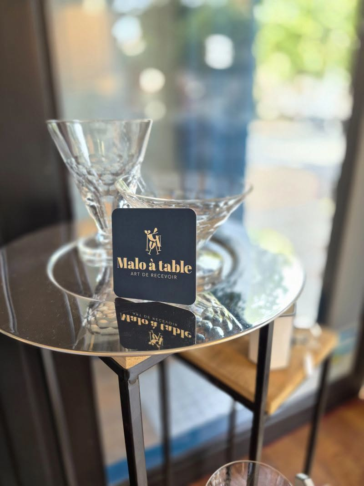
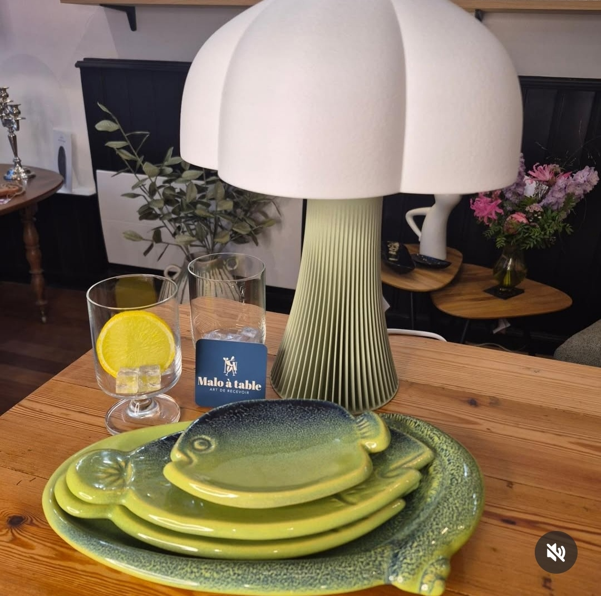
L'univers Malo à table
L'art de recevoir, autrement
Vaisselle, objets de décoration, luminaires, créations artisanales et trouvailles singulières : chaque pièce est une invitation à composer une table et une maison qui vous ressemblent.
On vient pour chercher une belle assiette, découvrir une lampe, trouver le petit détail qui change tout. Et souvent, on reste un peu pour parler des belles choses.
Des objets choisis pour les moments que l'on aime partager.
Voir la galerie ↗À découvrir en boutique
Des trouvailles qui ont du caractère
Vaisselle, luminaires, objets et belles idées : un aperçu de ce que l'on trouve chez Malo à table.
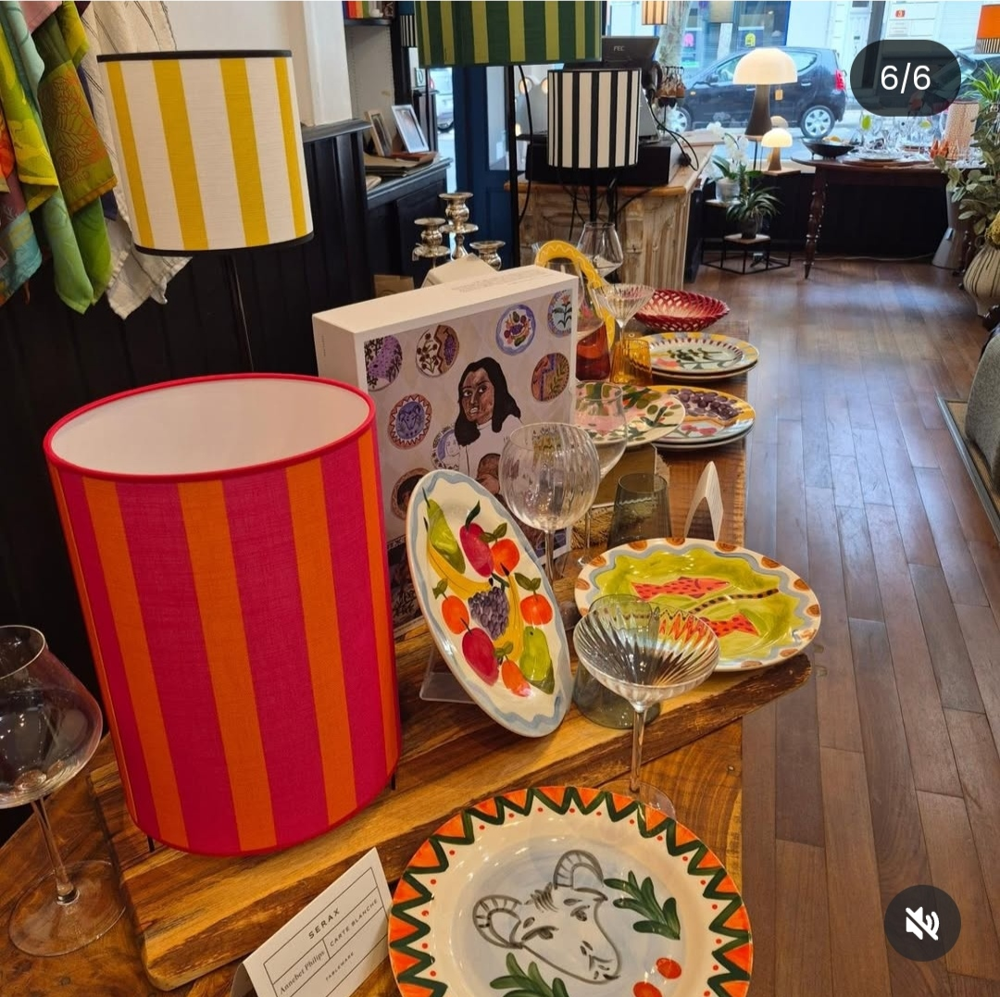
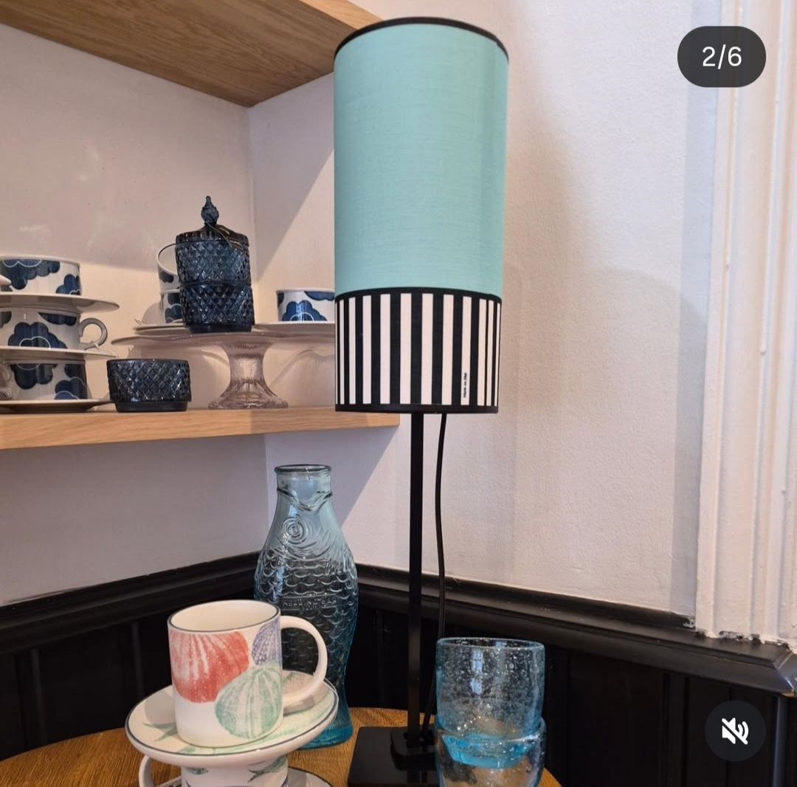
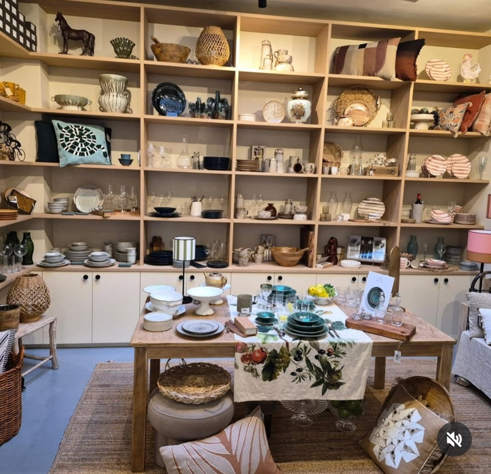
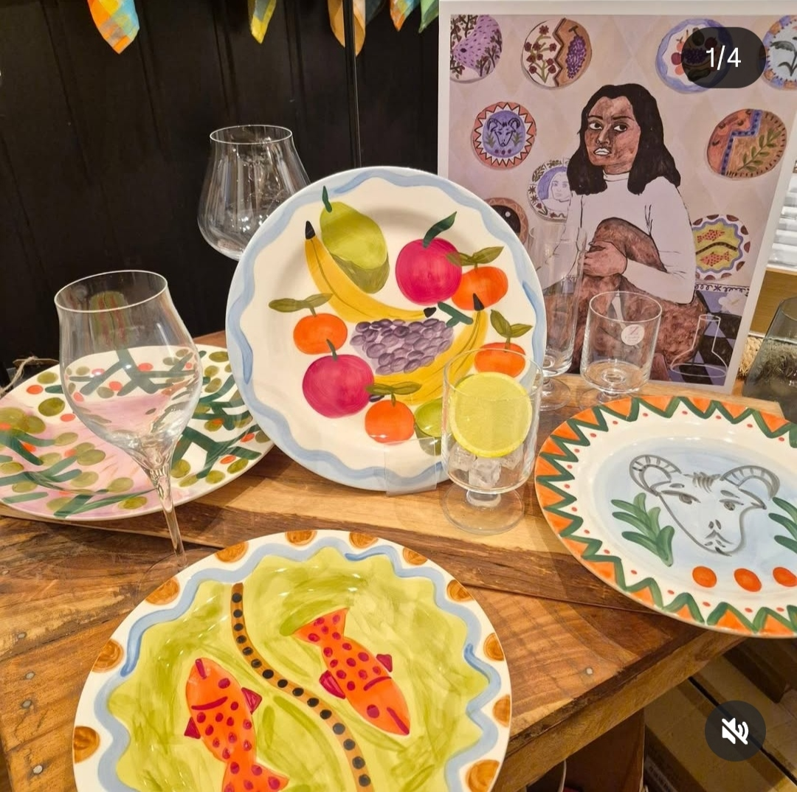
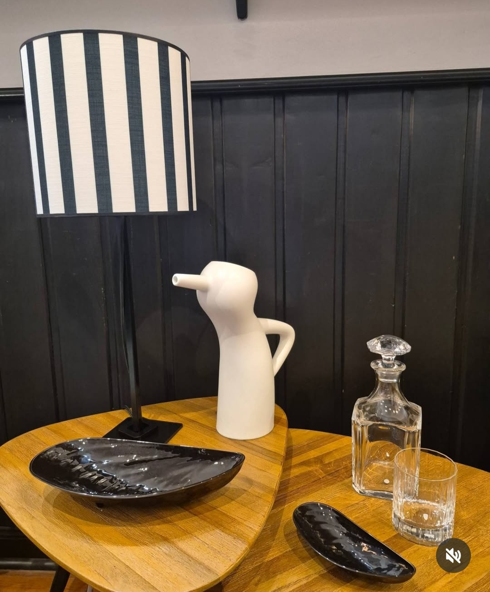
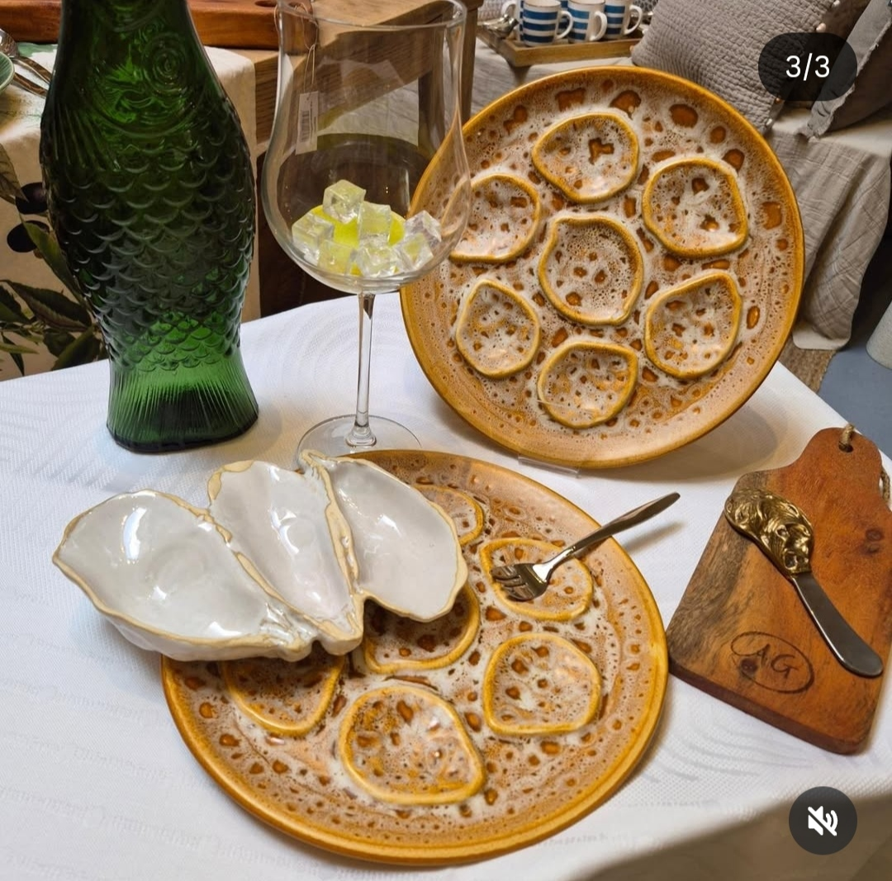
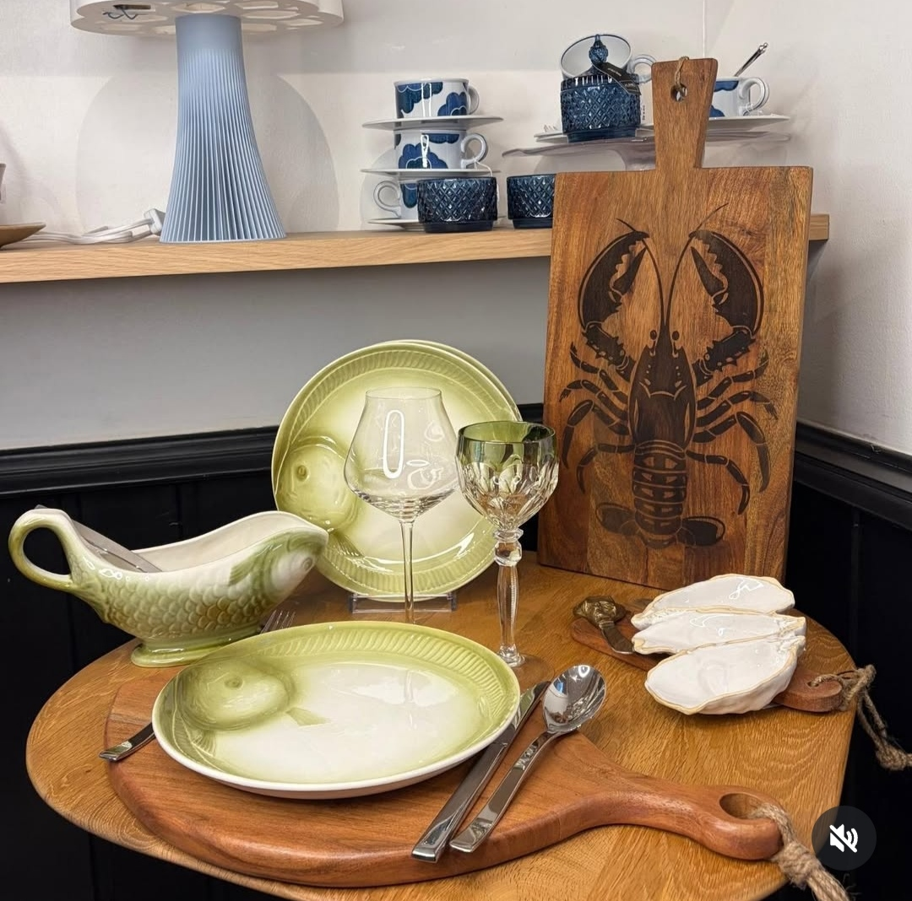
Notre histoire
Une histoire de passion et de rencontres
Christine a imaginé Malo à table comme un lieu vivant, à son image : chaleureux, curieux et ouvert aux découvertes. Une boutique où l'on prend le temps de regarder, de chercher, de conseiller et de partager.
- Près de vingt ans chez BaccaratResponsable du musée et du château, puis directrice de boutique, au cœur d'une maison d'exception.
- L'envieUn lieu vivant, curieux, ouvert aux découvertes et aux rencontres.
- Aujourd'huiUne sélection libre : pièces neuves, créations artisanales et seconde main.
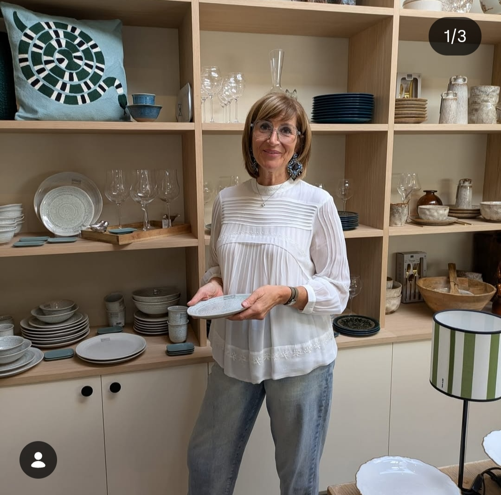
Recevoir, c'est créer une atmosphère, choisir une lumière, dresser une table et surtout donner envie de rester.
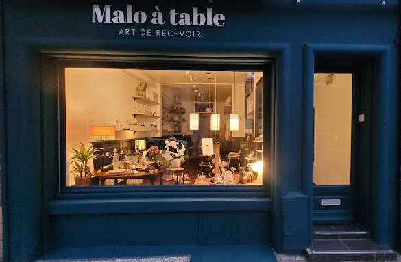
La boutiquePréparer ma visite ↗
Une belle adresse à découvrir
4 avenue Gaspard Malo
59240 Dunkerque · Malo-les-Bains
Horaires d'ouverture
Du mardi au samedi10h - 12h30
Après-midi14h30 - 19h
Dimanche & lundiFermé
Poussez la porte, prenez le temps de découvrir.
Retrouvez-nous à Malo-les-Bains
Carte OpenStreetMapVos mots nous touchent
Ils en parlent
Les retours de nos visiteurs comptent. Retrouvez tous les avis directement sur Google.
J'y ai trouvé la lampe parfaite pour mon salon. Christine donne de vrais conseils, sans jamais en faire trop.
Une boutique comme on les aime : de belles choses, une ambiance douce, on y retourne avec plaisir.
Exemples d'avis pour la maquette, à remplacer par les vrais avis Google.Consulter la fiche Google ↗
Écrivez-nous
Une question, une envie, une découverte ?
À propos de la boutique, d'un objet, d'un atelier ou d'une collaboration, Christine sera heureuse de vous lire.
Nous trouver4 avenue Gaspard Malo
59240 Dunkerque
59240 Dunkerque